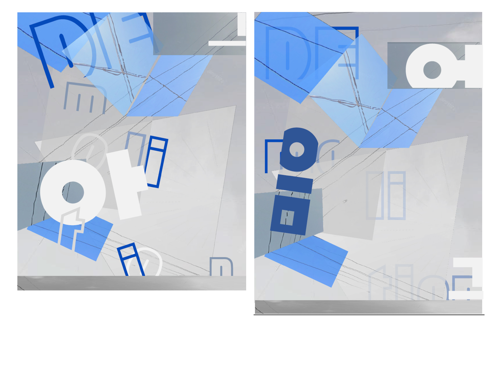
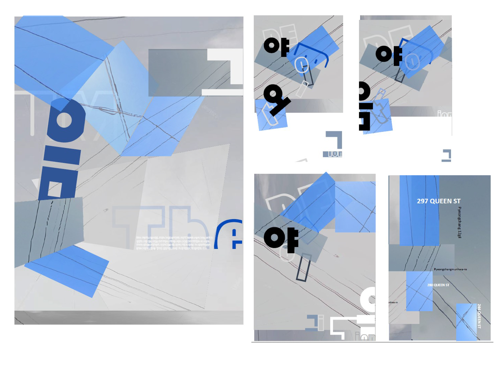
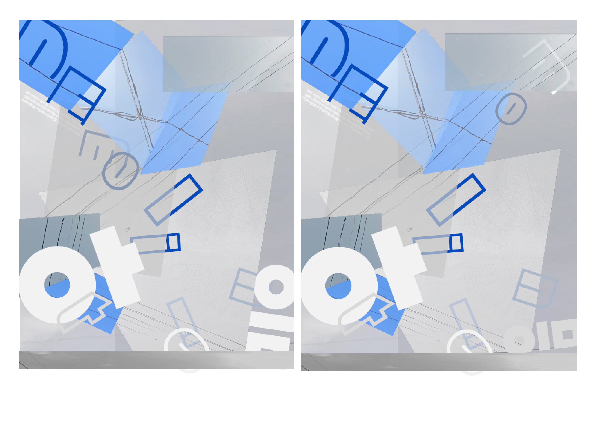
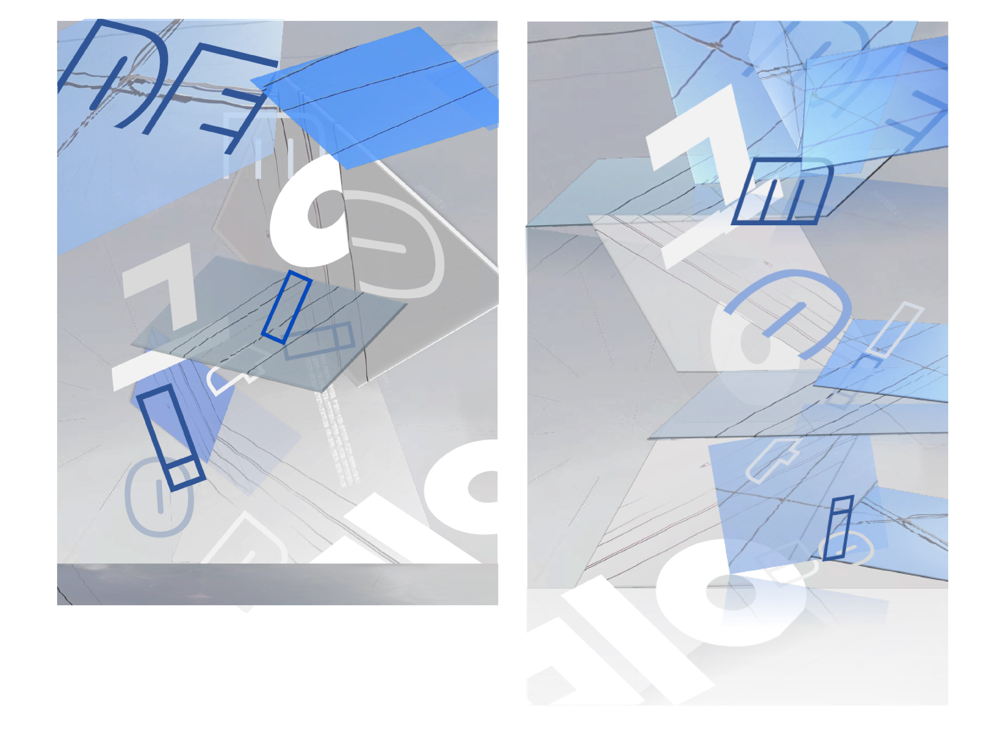
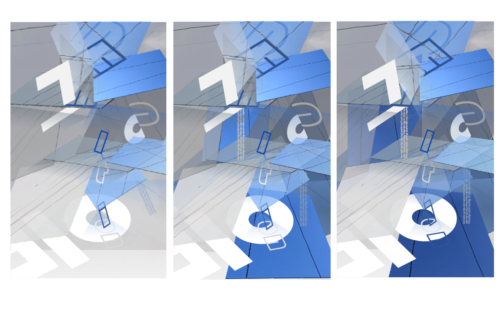

Project 1
Confounding tool
Making design a 24” × 36” digital poster about your life under
COVID 19 without using software explicitly intended for design.

Concept
First of all, I was always confused about the time between Toronto and Seoul. Sometimes, I have to follow Seoul time. Sometimes, I have to follow Toronto time. My lifestyle was ruined. Second of all, I couldn’t improve my English skill. A language skill improves when it is used and exposed. The more I stayed in Seoul, the more my English skill got worse than when I tried to get an English score to enter the OCAD.
Based on these experiences, I decided to express the suffering from studying in different time zone as an international student.
Phase1
I tried 4 different tools : P5.js, Excel, Google map, and Word.
p5.js: Making illustration using mainly tag :quad
word & Googlemap: Connecting the sky of Toronto(bluish) and Seoul(gray tone) to show
two different time zones connected by technology like the internet.
Excel: Combination with English and Hangul(Korean
Alphabet) to show struggling with the second language as an
international student.
Phase2
Combining two theme from Excel & Googlemap  
Phase3
Making better compositions gathering elements that spread  
Phase4: Final attempts
Modifying details gathering elements that spread for the final 
Final